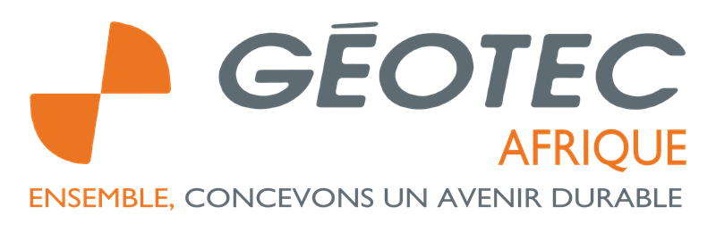

Pas de connexion Internet : les applications s’ouvriront dès le retour du réseau.
GEOTEC AFRIQUE — Laboratoire · connexion avec votre nom et votre code dans chaque application

GEOTEC AFRIQUE — Laboratoire · connexion avec votre nom et votre code dans chaque application